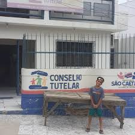

Bem-vindo ao
Conselho Tutelar
Estamos aqui para proteger e garantir os direitos das crianças e adolescentes.
Estamos aqui para proteger e garantir os direitos das crianças e adolescentes.


consenho tutelar: são caitano,Pernanbuco/PE

consenho tutelar:Rio Branco,Acre/AC
>consenho tutelar: Franca/SP
O Conselho Tutelar é um órgão permanente e autônomo, encarregado pela sociedade de zelar pelos direitos da criança e do adolescente, conforme o Estatuto da Criança e do Adolescente (ECA).
Ele atua sempre que os direitos dos menores forem ameaçados ou violados, por ação ou omissão da sociedade, do Estado, dos pais ou responsáveis, ou em razão de sua própria conduta.
Assegura que os direitos das crianças e adolescentes sejam respeitados, conforme o ECA (Estatuto da Criança e do Adolescente).
Atende casos de negligência, violência física, psicológica, abuso sexual e abandono.
Recebe denúncias da comunidade e atua imediatamente para proteger o menor.
Encaminha famílias e crianças a serviços públicos de saúde, assistência social, educação e justiça.
O Conselho Tutelar está disponível para toda a comunidade. Qualquer pessoa que perceba uma violação dos direitos de uma criança ou adolescente pode (e deve!) entrar em contato.